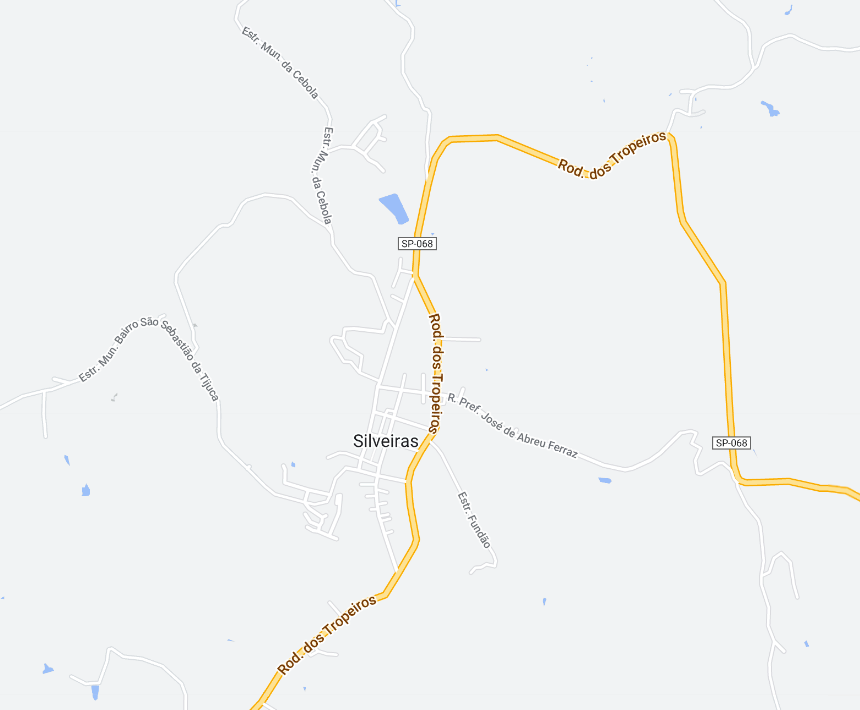
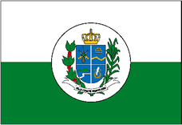

Silveiras - Geodex


Município de Silveiras
-
Populacão: 6.375 pessoas
-
Área: 414,782km²
-
Fundação: 28 de Fevereiro de 1842
-
Distância da Capital: 220km
Silveiras é uma cidade que surgiu no final do século XVIII como um rancho de tropas da família Silveira. Com a chegada do café, no início do século XIX, a cidade se desenvolveu rapidamente. Em 1830, foi estabelecida a Freguesia dos Silveiras, e em 1842, a freguesia se tornou uma vila independente. Durante a Revolução Liberal, em 1842, Silveiras foi palco de conflitos sangrentos. Após a reconstrução, a Vila dos Silveiras foi oficialmente estabelecida em 1844. Ao longo do século XIX, Silveiras foi um importante centro de serviços para tropeiros. No entanto, a cidade entrou em decadência devido a mudanças econômicas e a perda de população. A partir de 1978, um movimento comunitário revitalizou a cidade, destacando seu patrimônio cultural e ambiental. Atualmente, Silveiras atrai turistas interessados em sua cultura, história e ecologia, além de ter uma economia baseada no turismo rural. A cidade tem melhorado sua qualidade de vida e é reconhecida como a primeira Área de Proteção Ambiental do Estado de São Paulo e Minas Gerais.